Agregar librerías y bloques propios a DroneScript
Tutorial paso a paso, de principio a fin, con dos ejemplos: detectar manos con MediaPipe y crear tus propias rutinas de vuelo.
Descargar este tutorial en Word Versión corta, sólo con las plantillas
Estas funciones están en la versión de prueba 1.5. DroneScript Edu 2.0 ya no las incluye: pasan a DroneScript, el editor de código, que está en desarrollo.
Requisitos
- DroneScript 1.5 o más nuevo. Al final de la paleta de bloques tiene que aparecer el botón Extensiones y librerías…. Si no está, actualiza con el botón de versión de la barra superior o descarga la última versión de la página de descargas.
- Internet en el PC para instalar librerías. cuando el PC se conecta al Wi-Fi del dron se queda sin internet, así que instala todo antes de conectarte al dron.
- Un editor de texto: el Bloc de notas sirve.
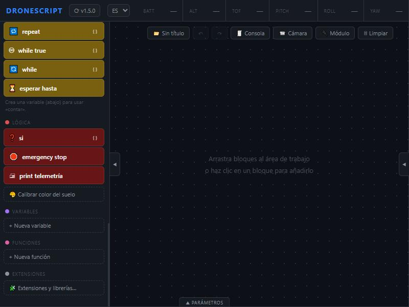
La idea: librería y extensión
- Una librería es código que ya escribió otra persona y que sabe hacer algo difícil, como MediaPipe, que encuentra los 21 puntos de una mano en una foto. Se instala desde PyPI, el almacén de librerías de Python, igual que con
pip install. - Una extensión es un archivo
.pyque escribes tú. Declara los bloques nuevos de la paleta y lo que hace cada uno. Puede usar librerías o sólo tu propio código.
Toda extensión tiene tres partes:
| Parte | Qué es |
|---|---|
EXTENSION = {...} | Id, nombre, librerías que necesita ("librerias") y archivos que hay que descargar ("archivos"). |
BLOQUES = [...] | Los bloques nuevos. Acción: un bloque que hace algo, con hasta 3 casillas. Sensor: aparece en las condiciones de si, while y esperar hasta; devuelve un número, sí/no o un texto. |
def funcion(drone, ...) | Una función de Python por bloque. Recibe drone (el mismo objeto de las misiones) y los valores de sus casillas, en orden. |
Con drone puedes moverte (drone.move_forward(50), drone.rotate_clockwise(90)), leer sensores (drone.get_battery(), drone.get_height(), drone.sees_aruco(100)), pedir la imagen de la cámara (drone.get_frame()), escribir en la consola (drone.log("texto")) y esperar (drone.wait(segundos), que se corta al pulsar Detener).
Seguridad. Una extensión es código Python con los mismos permisos que DroneScript. Al importarla, la app la lee sin ejecutarla, te muestra qué hace y su huella SHA-256, y sólo la ejecuta mientras el archivo siga siendo exactamente el que aprobaste. Importa sólo extensiones de personas de confianza.
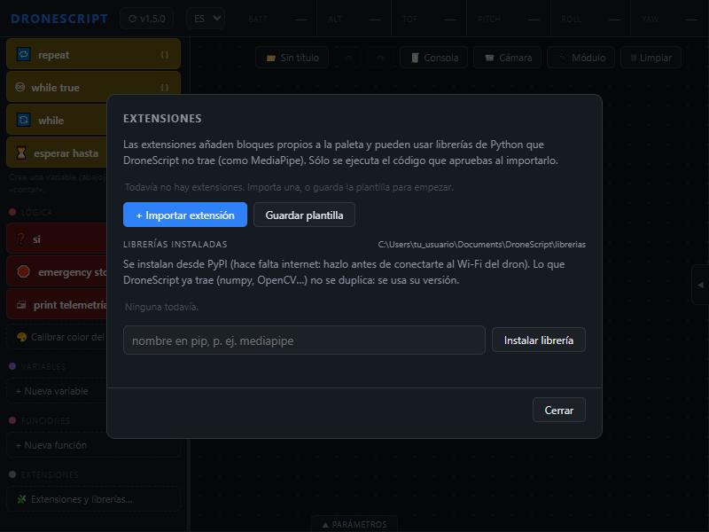
Parte 1. Agregar una librería que ya existe: detectar manos
Vamos a enseñarle a DroneScript a ver manos con la cámara del Tello y a contar los dedos levantados. MediaPipe, de Google, no viene con DroneScript: la agregamos nosotros. Al terminar tendrás tres bloques nuevos:
| Bloque | Tipo | Qué hace |
|---|---|---|
| dedos levantados | sensor (número) | Cuántos dedos ve levantados, de 0 a 4 (sin contar el pulgar). |
| ve una mano | sensor (sí / no) | Si hay una mano en la imagen. |
| esperar dedos | acción | Espera hasta ver cierto número de dedos (como mucho 20 s). |
Paso 1. Escribir la extensión
Crea un archivo llamado exactamente manos.py (el nombre tiene que coincidir con el id) y copia este código. Los comentarios explican cada parte.
# ════════════════════════════════════════════════════════════════════════════
# manos.py — extensión de DroneScript: detectar manos y contar dedos
# ════════════════════════════════════════════════════════════════════════════
#
# Una extensión tiene SIEMPRE tres partes:
# 1. EXTENSION: quién es, qué librerías usa y qué archivos necesita.
# 2. BLOQUES: los bloques nuevos que aparecerán en la paleta.
# 3. Funciones: lo que hace cada bloque (una función de Python por bloque).
#
# DroneScript LEE las partes 1 y 2 sin ejecutar nada, para mostrarte qué hace el
# archivo antes de que lo apruebes. Por eso EXTENSION y BLOQUES tienen que ser
# valores fijos: textos, números, listas y diccionarios, sin cálculos ni variables.
# ── 1. Datos de la extensión ────────────────────────────────────────────────
EXTENSION = {
# id: identificador único, en minúsculas y sin espacios. Debe coincidir con el
# nombre del archivo (manos.py → "manos").
"id": "manos",
# nombre: lo que se ve en la paleta como título de la categoría nueva.
"nombre": "Manos (MediaPipe)",
"descripcion": "Ve una mano con la cámara y cuenta los dedos levantados.",
"autor": "Tu nombre",
"version": "1.0",
# color de la categoría en la paleta (formato #rrggbb).
"color": "#b4508a",
# librerias: los nombres EXACTOS como en pip (pip install mediapipe).
# DroneScript las instala cuando pulses «Instalar lo que falta».
"librerias": ["mediapipe"],
# archivos: cosas que hay que descargar aparte. MediaPipe necesita un «modelo»:
# un archivo con lo que la red neuronal aprendió sobre cómo es una mano (~7 MB).
# DroneScript lo descarga a Documentos\DroneScript\extensiones\manos\
# y, como damos su sha256 (su «huella digital»), comprueba que llegó completo y
# que es exactamente ese archivo y no otro.
"archivos": [{
"nombre": "mano.task",
"url": "https://storage.googleapis.com/mediapipe-models/hand_landmarker/hand_landmarker/float16/1/hand_landmarker.task",
"sha256": "fbc2a30080c3c557093b5ddfc334698132eb341044ccee322ccf8bcf3607cde1",
}],
}
# ── 2. Los bloques nuevos ───────────────────────────────────────────────────
# tipo "sensor": se usa dentro de las condiciones de «si», «while» y «esperar hasta».
# «valor» dice qué devuelve: "numero", "si_no" o "texto".
# tipo "accion": es un bloque que se pone en el programa, como «fly forward».
# «args» son los campos que el alumno rellena (hasta 3).
# «funcion» es el nombre de la función de Python que se ejecuta (más abajo).
BLOQUES = [
{"funcion": "dedos", "tipo": "sensor", "texto": "dedos levantados", "valor": "numero"},
{"funcion": "ve_mano", "tipo": "sensor", "texto": "ve una mano", "valor": "si_no"},
{"funcion": "esperar_dedos", "tipo": "accion", "texto": "esperar dedos",
"args": [{"nombre": "cuántos", "tipo": "numero", "defecto": 2}]},
]
# ── 3. El código ────────────────────────────────────────────────────────────
# Todo lo de aquí abajo SÍ se ejecuta, pero sólo cuando una misión usa uno de
# estos bloques, y sólo si el archivo es exactamente el que aprobaste.
import time
import cv2 # OpenCV: ya viene con DroneScript (convierte colores)
import mediapipe as mp # la librería que agregamos
from mediapipe.tasks.python import BaseOptions, vision
from control.extensiones import carpeta # dónde quedaron los archivos descargados
# El detector de MediaPipe tarda ~1 s en prepararse: lo creamos UNA vez y lo guardamos
# aquí para reutilizarlo en cada fotograma (si no, cada bloque tardaría 1 s).
detector = None
# Los 21 puntos que MediaPipe encuentra en una mano (los que usamos):
#
# 8 12 16 20 ← puntas de los dedos (índice, medio, anular, meñique)
# | | | |
# 6 10 14 18 ← nudillo del medio de cada dedo
# \ | | /
# 4 \ | | /
# \___\|___|/ ← 4 = punta del pulgar
# 0 ← 0 = muñeca
#
# Cada punto tiene .x y .y entre 0 y 1 (fracción del ancho y del alto de la imagen).
PUNTAS_Y_NUDILLOS = [(8, 6), (12, 10), (16, 14), (20, 18)]
def _mano(drone):
"""Busca una mano en lo que ve la cámara ahora. Devuelve sus 21 puntos, o None."""
global detector
# 1) Pedir el fotograma actual. Si la cámara está apagada, DroneScript la enciende.
# Si el dron no tiene cámara (p. ej. el CoDrone EDU), llega None.
img = drone.get_frame()
if img is None:
return None
# 2) Crear el detector la primera vez, con el modelo que se descargó.
if detector is None:
opciones = vision.HandLandmarkerOptions(
base_options=BaseOptions(model_asset_path=str(carpeta("manos") / "mano.task")),
num_hands=1) # con una mano basta, y es más rápido
detector = vision.HandLandmarker.create_from_options(opciones)
# 3) OpenCV guarda los colores como BGR (azul, verde, rojo) y MediaPipe los quiere
# en RGB: si no se convierten, la piel se ve azulada y detecta peor.
rgb = cv2.cvtColor(img, cv2.COLOR_BGR2RGB)
resultado = detector.detect(mp.Image(image_format=mp.ImageFormat.SRGB, data=rgb))
# 4) hand_landmarks es una lista con los puntos de cada mano encontrada.
if not resultado.hand_landmarks:
return None
return resultado.hand_landmarks[0]
def _lejos_de_la_muneca(p, a, b):
"""¿El punto a está más lejos de la muñeca que el punto b?
Un dedo levantado tiene la punta MÁS LEJOS de la muñeca que su nudillo; uno doblado,
más cerca. Comparamos distancias (y no sólo «más arriba») para que funcione aunque la
mano esté girada o de lado. Usamos la distancia al cuadrado: para comparar da lo mismo
y nos ahorramos la raíz.
"""
def dist2(i):
return (p[i].x - p[0].x) ** 2 + (p[i].y - p[0].y) ** 2
return dist2(a) > dist2(b)
def dedos(drone):
"""Sensor «dedos levantados»: 0 a 4 (el pulgar no se cuenta: de lado engaña mucho)."""
p = _mano(drone)
if p is None:
return 0
n = sum(_lejos_de_la_muneca(p, punta, nudillo) for punta, nudillo in PUNTAS_Y_NUDILLOS)
# drone.log escribe en la consola de DroneScript: muy útil para ver qué está
# detectando mientras pruebas. Bórralo cuando ya funcione (llena la consola).
drone.log(f"manos: {n} dedos")
return n
def ve_mano(drone):
"""Sensor «ve una mano»: True o False."""
return _mano(drone) is not None
def esperar_dedos(drone, cuantos):
"""Acción «esperar dedos»: espera hasta ver ese número de dedos (como mucho 20 s).
drone.wait() es importante: además de esperar, revisa si alguien pulsó Detener,
Land o Emergency. Un time.sleep() normal NO lo haría y la misión no se podría parar.
"""
limite = time.monotonic() + 20
while time.monotonic() < limite:
if dedos(drone) == int(cuantos):
drone.log(f"manos: vi {int(cuantos)} dedos")
return
drone.wait(0.1)
drone.log(f"manos: no vi {int(cuantos)} dedos en 20 s; sigo", "warn")EXTENSIONyBLOQUESvan primero y son valores fijos: DroneScript los lee sin ejecutar el archivo, para mostrarte qué hace antes de aprobarlo.- Lo pesado se prepara una sola vez: el detector de MediaPipe tarda 1 s en crearse y se guarda en una variable global.
- Nunca uses
time.sleep()largos ni bucles sin fin: usadrone.wait(), que deja que Detener funcione.
Paso 2. Importar la extensión
- Abre DroneScript. En la paleta, al final: Extensiones y librerías… → + Importar extensión → elige tu
manos.py. - Se abre la ventana de revisión. Mira los bloques que añade, la librería (
mediapipe), la descarga (mano.task) y la huella SHA-256, la huella digital del archivo. Pulsa Importar.
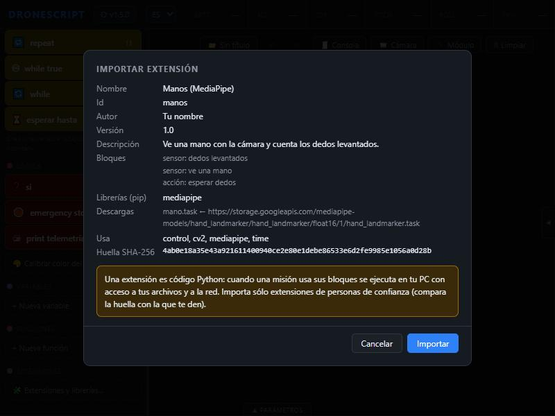
Paso 3. Instalar la librería
- La extensión aparece con el aviso Falta: mediapipe, mano.task. Pulsa Instalar lo que falta.
- En la consola verás a pip trabajando: descarga MediaPipe y lo que necesita (1 a 3 minutos), borra lo que DroneScript ya trae (numpy, OpenCV…) y descarga el modelo
mano.task, comprobando su huella. - Cuando diga Lista para usar, cierra la ventana (botón Cerrar, la tecla Escape o un clic fuera).
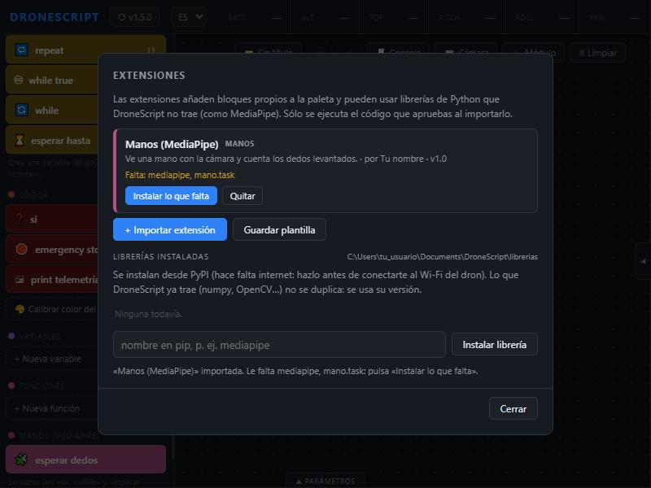
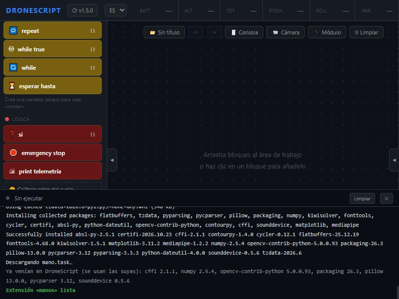
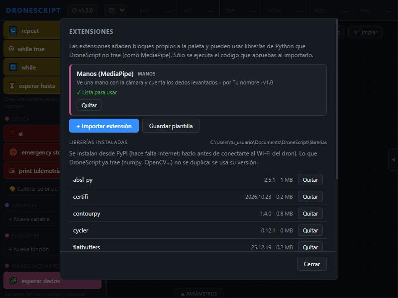
¿Sólo una librería, sin extensión? En esa misma ventana escribe su nombre en la casilla «nombre en pip» y pulsa Instalar librería. Queda disponible para tus extensiones y para el código de las misiones.
Paso 4. Los bloques nuevos en la paleta
Aparece la categoría Manos (MediaPipe) con la acción esperar dedos. Los dos sensores no son bloques sueltos: están al final de la lista de sensores de las condiciones de si, while y esperar hasta.
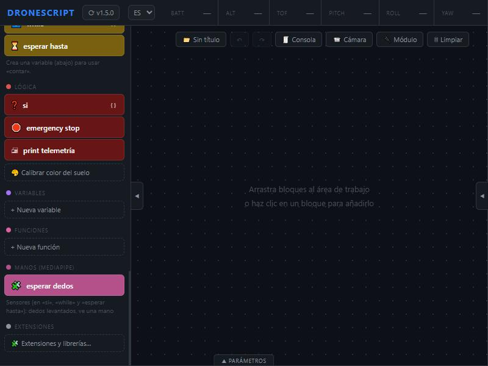
Paso 5. Probar en tierra
- Conecta el PC al Wi-Fi del Tello (TELLO-XXXXXX) → Seleccionar dron → DJI Tello → Conectar.
- Con el Tello apoyado en la mesa, arma este programa. El si sólo sirve para leer el sensor 30 veces.
- Pulsa Ejecutar, pon la mano a 40–100 cm de la cámara con buena luz y abre y cierra los dedos. En la consola verás «manos: 2 dedos», «manos: 4 dedos»… La primera lectura tarda 1–2 s más: es el detector preparándose.
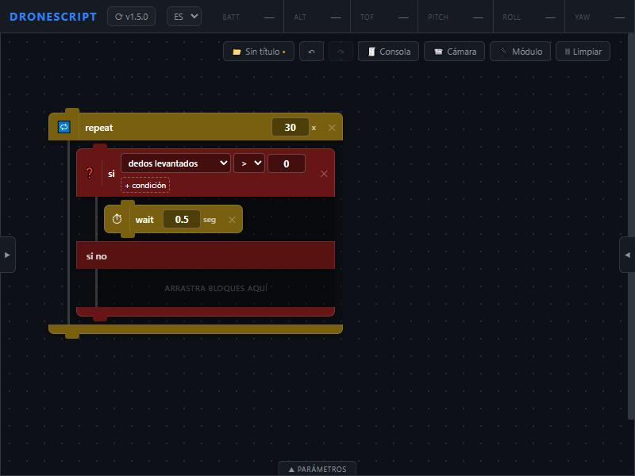
Paso 6. Volar con gestos
Este programa despega, espera a que muestres 1 dedo para subir, 2 dedos para girar, y después avanza cada vez que muestres 1 dedo, hasta que abras la mano (4 dedos) para aterrizar.
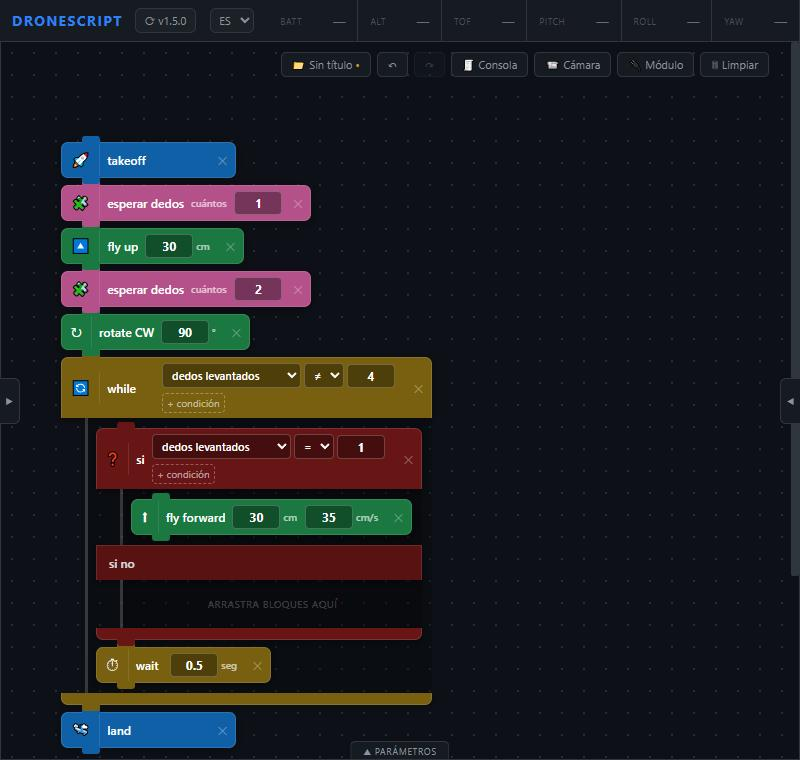
- Ten siempre a mano Land (tecla L) y Emergency (tecla E): funcionan aunque la misión esté esperando una mano.
- El vídeo del Tello llega con unos 0,3 s de retraso: haz los gestos despacio y sostenlos un momento.
- Apunta la mano hacia la cámara, que está al frente del dron, y no le pongas la luz detrás.
En el panel Código generado se ve cómo DroneScript carga tu extensión (cargar("manos")) y llama a tus funciones (_ext_manos.esperar_dedos(drone, 1), _ext_manos.dedos(drone)).
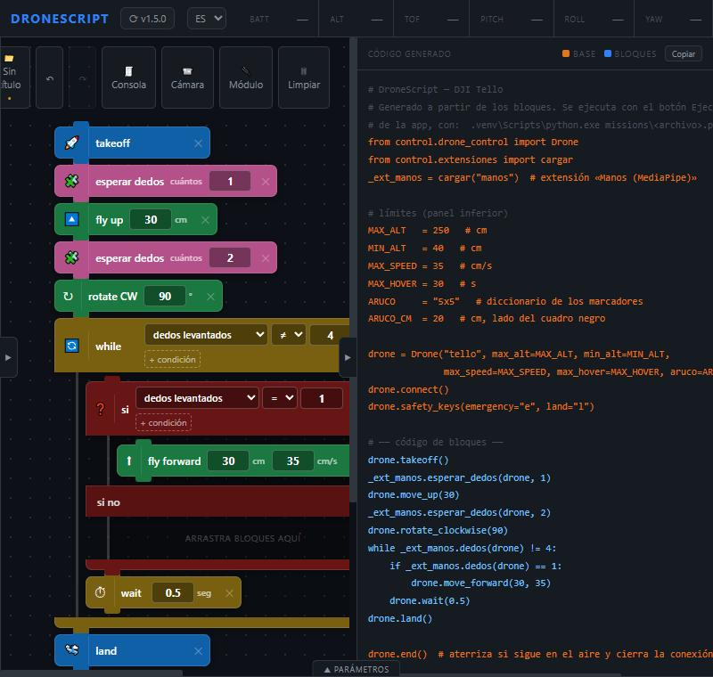
Parte 2. Crear tu propia extensión: Rutinas de vuelo
Ahora una extensión escrita desde cero, sin librerías externas, sólo Python y el objeto drone. Es útil en competencias (buscar el ArUco al despegar), para practicar geometría (los ángulos del polígono) y para analizar vuelos (la tabla de datos).
| Bloque | Tipo | Qué hace |
|---|---|---|
| polígono [lados] de [cm] | acción | Vuela un polígono regular: triángulo, cuadrado, hexágono… |
| buscar ArUco [id] | acción | Gira de 30 en 30° hasta ver el marcador (como mucho una vuelta). |
| anotar [nota] | acción | Guarda hora, batería, altura y orientación en una tabla CSV que se abre con Excel. |
| segundos de misión | sensor | Cuántos segundos lleva la misión. |
Paso 1. Dónde guardarla
En una carpeta tuya, por ejemplo Documentos\mis_extensiones\. DroneScript hace una copia al importarla; tu archivo es el que editas y del que guardas respaldo. Las actualizaciones de DroneScript no la tocan.
Paso 2. Escribir la extensión
Guarda este código como rutinas.py:
# ════════════════════════════════════════════════════════════════════════════
# rutinas.py — extensión propia de DroneScript: rutinas de vuelo
# ════════════════════════════════════════════════════════════════════════════
#
# Bloques nuevos:
# · polígono (acción) vuela un polígono regular de N lados
# · buscar ArUco (acción) gira poco a poco hasta ver un marcador
# · anotar (acción) guarda la telemetría en una tabla (CSV, se abre con Excel)
# · segundos de misión (sensor) cuánto tiempo lleva la misión
#
# No necesita instalar nada: sólo usa lo que ya trae Python y la API de DroneScript
# (el objeto `drone`, el mismo de las misiones).
# ── 1. Datos de la extensión (valores fijos: DroneScript los lee sin ejecutar) ──
EXTENSION = {
"id": "rutinas", # = nombre del archivo (rutinas.py), en minúsculas
"nombre": "Rutinas de vuelo", # título de la categoría en la paleta
"descripcion": "Polígonos, búsqueda de ArUco y registro de vuelo en CSV.",
"autor": "Tu nombre",
"version": "1.0",
"color": "#2d7d46",
"librerias": [], # nada que instalar con pip
"archivos": [], # nada que descargar
}
# ── 2. Bloques nuevos ───────────────────────────────────────────────────────
# «args»: los campos que se rellenan en el bloque (máximo 3).
# tipo "numero": casilla de número (admite cuentas con variables, como vueltas * 10)
# tipo "texto": casilla de texto
# «unidad» se muestra detrás de la casilla.
BLOQUES = [
{"funcion": "poligono", "tipo": "accion", "texto": "polígono",
"args": [{"nombre": "lados", "tipo": "numero", "defecto": 4},
{"nombre": "de", "tipo": "numero", "defecto": 50, "unidad": "cm"}]},
{"funcion": "buscar_aruco", "tipo": "accion", "texto": "buscar ArUco",
"args": [{"nombre": "id", "tipo": "numero", "defecto": 100}]},
{"funcion": "anotar", "tipo": "accion", "texto": "anotar",
"args": [{"nombre": "nota", "tipo": "texto", "defecto": "punto 1"}]},
{"funcion": "segundos", "tipo": "sensor", "texto": "segundos de misión", "valor": "numero", "unidad": "s"},
]
# ── 3. El código ────────────────────────────────────────────────────────────
import csv
import time
from datetime import datetime
from control.extensiones import carpeta # carpeta propia de la extensión: extensiones\rutinas\
# Este archivo se ejecuta al empezar la misión (cuando el código generado hace
# cargar("rutinas")), así que la hora de ahora es «el inicio de la misión».
INICIO = time.monotonic()
ARCHIVO = None # la tabla de esta misión; se crea con la primera nota
def poligono(drone, lados, lado):
"""Vuela un polígono regular: «lados» tramos de «lado» cm, girando 360/lados grados.
Usa los mismos movimientos que los bloques, así que se respetan los límites del panel
(velocidad, altura) y Detener funciona en cualquier momento.
"""
lados = int(lados)
if lados < 3:
drone.log("polígono: hacen falta al menos 3 lados", "warn")
return
giro = 360 / lados # triángulo 120°, cuadrado 90°, hexágono 60°…
drone.log(f"polígono de {lados} lados de {lado} cm (giros de {giro:.0f}°)")
for _ in range(lados):
drone.move_forward(lado)
drone.rotate_clockwise(giro)
def buscar_aruco(drone, marcador):
"""Gira de 30 en 30 grados hasta ver el ArUco (como mucho una vuelta completa).
Después de cada giro espera medio segundo: la imagen del dron llega con algo de retraso
y sin esa pausa miraría una foto de antes del giro.
"""
marcador = int(marcador)
for paso in range(12): # 12 × 30° = 360°
if drone.sees_aruco(marcador):
drone.log(f"buscar ArUco: encontré el {marcador} tras girar {paso * 30}°", "success")
return
drone.rotate_clockwise(30)
drone.wait(0.5) # wait, no time.sleep: así Detener la corta
drone.log(f"buscar ArUco: di una vuelta y no vi el {marcador}", "warn")
def anotar(drone, nota):
"""Añade una fila a la tabla de la misión: hora, segundos, batería, altura, yaw y la nota.
La tabla queda en Documentos\\DroneScript\\extensiones\\rutinas\\vuelo_<fecha>.csv.
El CSV usa «;», que es lo que Excel en español espera para separar columnas.
"""
global ARCHIVO
nueva = ARCHIVO is None
if nueva:
carpeta("rutinas").mkdir(parents=True, exist_ok=True)
ARCHIVO = carpeta("rutinas") / f"vuelo_{datetime.now():%Y%m%d_%H%M%S}.csv"
fila = [datetime.now().strftime("%H:%M:%S"), segundos(drone), drone.get_battery(),
drone.get_height(), drone.get_yaw(), nota]
# «utf-8-sig» para que Excel muestre bien los acentos; newline="" lo pide el módulo csv
with open(ARCHIVO, "a", newline="", encoding="utf-8-sig") as f:
tabla = csv.writer(f, delimiter=";")
if nueva:
tabla.writerow(["hora", "segundos", "bateria_%", "altura_cm", "yaw_grados", "nota"])
tabla.writerow(fila)
drone.log(f"anotado: {nota} → {ARCHIVO.name}")
def segundos(drone):
"""Sensor: segundos (enteros) desde que empezó la misión."""
return int(time.monotonic() - INICIO)- El nombre de la casilla y el del parámetro no tienen que coincidir: importa el orden. La primera casilla es el primer valor después de
drone. - Las casillas de número llegan como número (por eso
int(lados)); las de texto, como texto. INICIOyARCHIVOestán fuera de las funciones: se crean una vez, al empezar la misión, y todas las funciones las comparten.- Los movimientos pasan por
drone: respetan la altura máxima, la velocidad y Detener, igual que los bloques normales.
Paso 3. Importarla
Extensiones y librerías… → + Importar extensión → rutinas.py. La revisión muestra los cuatro bloques y que no necesita librerías ni descargas. Pulsa Importar: como no le falta nada, queda Lista para usar directamente.
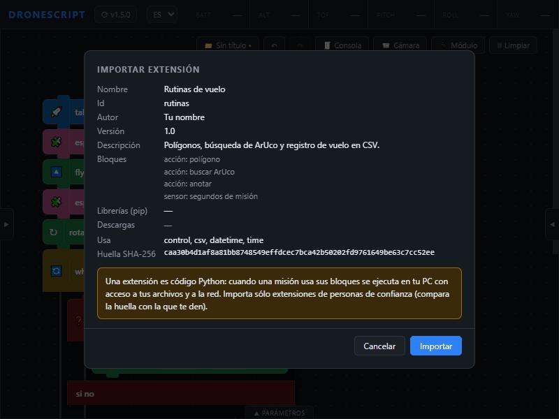
Paso 4. Probar en el simulador
Conecta el Simulador y arma este programa. El simulador tiene un ArUco 100 en la pared del frente.
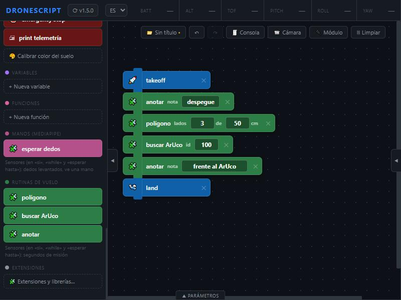
Pulsa Ejecutar. En la consola verás el triángulo (giros de 120°), «encontré el 100…» y las dos notas. Después abre la tabla en Documentos\DroneScript\extensiones\rutinas\vuelo_<fecha>.csv: se abre en Excel con una fila por nota.
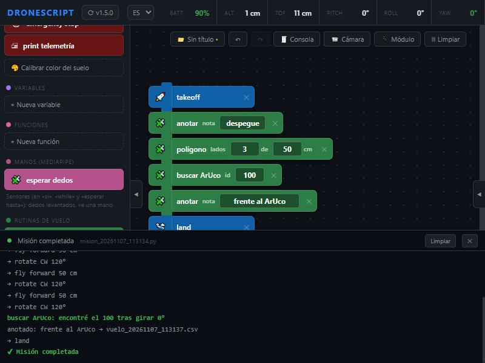
Para probar el sensor: un while con la condición [segundos de misión] [<] [20] y dentro un polígono [4] de [40]: repite cuadrados hasta que pasen 20 segundos.
Paso 5. Probar con el Tello
Pega un ArUco 5x5 ID 100 de 20 cm en una pared, a 1 m de altura, y repite el programa en un espacio libre de al menos 2 × 2 m. Empieza con un polígono pequeño ([3] de [40]). Al terminar, revisa la tabla: verás cómo baja la batería y la altura real en cada nota.
Paso 6. Cambiar tu extensión
- Edita tu archivo original y sube
"version"(por ejemplo a"1.1"). Ejemplo: para que buscar ArUco también se acerque al marcador, añadedrone.approach_aruco(marcador, 80)justo después deldrone.log(...)de «encontré». - Vuelve a importarlo: la app avisa de que reemplazará la anterior, que queda en
extensiones\papelera\.
No edites la copia de Documentos\DroneScript\extensiones\: su huella dejaría de coincidir y la app la marcaría «Sin aprobar» hasta que la revises de nuevo con Revisar y aprobar.
Paso 7. Mantenerla, compartirla o quitarla
- En otro PC: copia tu archivo e impórtalo allí.
- Para compartirla con alguien de confianza: pásale el
.pyy dile su huella SHA-256 (sale en la revisión), para que compruebe que recibió exactamente tu archivo. - Para quitarla: en su tarjeta, Quitar (dos clics). Se mueve a la papelera; sus tablas CSV se quedan.
Problemas comunes
| Mensaje o síntoma | Qué pasa y cómo arreglarlo |
|---|---|
| No es Python válido (línea N…) | Error de escritura en esa línea: paréntesis, comillas o dos puntos que faltan, o una sangría mal. |
| EXTENSION debe contener sólo valores fijos | En EXTENSION o BLOQUES hay una variable o un cálculo. Escribe los valores directamente. |
| El archivo se llama X pero su id es «…» | El nombre del archivo tiene que ser <id>.py. |
| bloque N: no está la función «…» | El "funcion" no coincide con el def: revisa mayúsculas, acentos y guiones bajos. |
| la función «…» debe recibir N parámetros | Una acción recibe drone y un parámetro por cada casilla; un sensor, sólo drone. |
| Sin aprobar: el archivo se copió a mano o cambió | Se editó la copia de la carpeta de extensiones: Revisar y aprobar, o vuelve a importar tu original. |
| pip no pudo instalar … | Sin internet (¿sigues en el Wi-Fi del dron?), o esa librería no tiene versión para Windows y Python 3.12. |
| La extensión falló al cargarse: NameError… | Error en tu código fuera de las funciones (un import o una variable mal escrita). El mensaje dice cuál. |
| La misión no se detiene con Detener | Tu función usa time.sleep() largo o un bucle sin drone.wait(). |
| No llegó ningún fotograma (Tello) | El vídeo no llega: permite DroneScript en el Firewall de Windows o marca la red del Tello como privada. |
| Siempre 0 dedos | Poca luz, mano muy lejos (más de 1,5 m) o muy cerca. Revisa la consola: drone.log muestra lo que detecta. |
Consejo para depurar: pon drone.log(f"valor: {x}") donde quieras ver qué está pasando; sale en la consola de DroneScript.